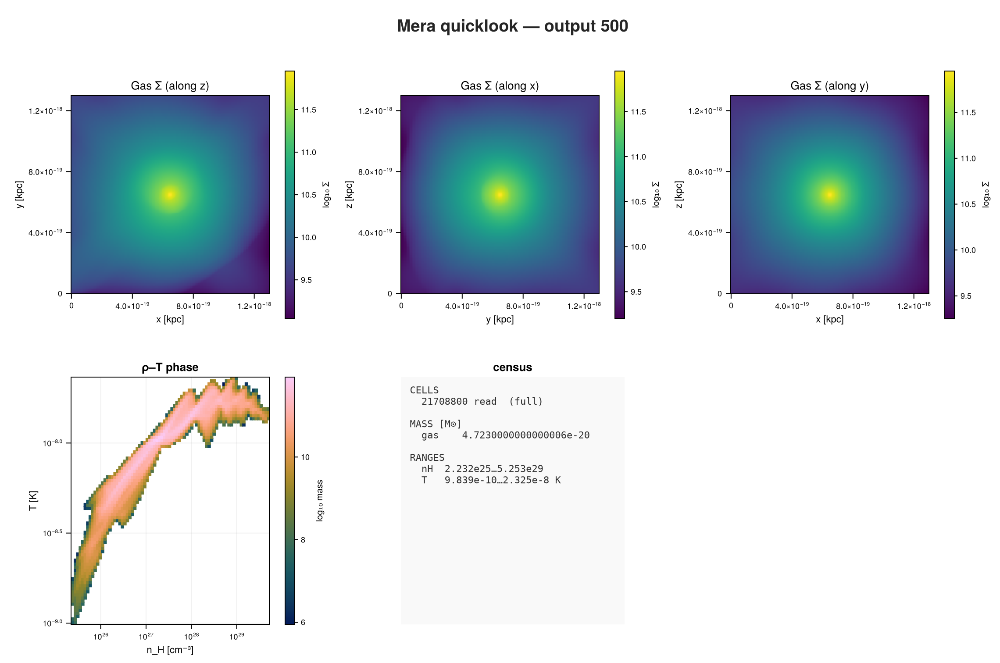
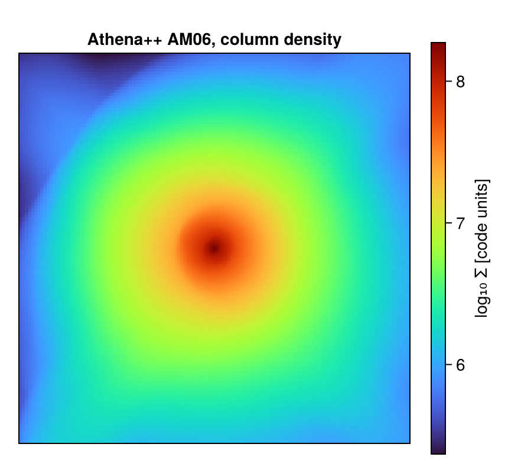

Athena++: First Inspection
This page is also an executable Jupyter notebook: open / download 42_athena_First_Inspection.ipynb. The notebooks run end-to-end and double as part of Mera's test suite.
Athena++ writes .athdf HDF5 files, with the domain split into MeshBlocks that can be refined independently. This page opens one, looks at the refinement, and makes a map.
The run is AM06, a magnetised turbulence snapshot: five refinement levels and about 22 million cells, so it is also a fair test of whether the machinery holds up on something real.
It is the AM06 sample from the yt project:
curl -O https://yt-project.org/data/AM06.tar.gz
tar xzf AM06.tar.gz1. One call to see everything
using Mera, CairoMakie
path = "/Volumes/FASTStorage/Simulations/Mera-Tests/ATHENA/athena_AM06/AM06"
ql = quicklook(500; path=path);*__ __ _______ ______ _______
| |_| | | _ | | _ |
| | ___| | || | |_| |
| | |___| |_||_| |
| | ___| __ | |
| ||_|| | |___| | | | _ |
|_| |_|_______|___| |_|__| |__|
Mera v2.0.0-DEV | Julia 1.12.7 | 8 threads
[Mera]: quicklook output 500, reading gas: 2026-09-15T19:35:26.704
5300 CPU file(s), levels 7-11 of 11 (full resolution)
projecting 3 gas map(s) [z, x, y] and the phase diagram from 21708800 cells
┌─ Mera quicklook ── output 500 (Athena++) ───────────────
│ box : 1.296e-18 kpc levels 7–11 (finest 6.33e-19 pc)
│ grid : ndim 3 · ncpu 5300 · nvarh 8
│ time : 1.584e-10 Myr (non-cosmological)
│ read : 21708800 cells (full resolution)
│ gas mass : 4.7230000000000006e-20 M⊙
│ nH range : 2.232e25 … 5.253e29 cm⁻³
│ T range : 9.839e-10 … 2.325e-8 K
└─ 54.86 s ──────────────────────────────────
[Mera]: quicklook output 500 finished: 2026-09-15T19:36:20.552quicklookplot(ql)
Unlike the two previous pages, the density-temperature diagram here has real structure. This run has a genuine spread of temperatures, so the plane fills instead of collapsing to a line.
Athena++ keeps its unit constants in the problem setup, not in the output, so Mera cannot read them and treats one code unit as one CGS unit. Anything printed in kpc or solar masses above is therefore arithmetic rather than physics. Pass unit_length=, unit_density= and unit_velocity= if you know them; everything below stays in code units, which is honest for a turbulence box.
2. The details: getinfo
info = getinfo(500, path);[Mera]: 2026-09-15T19:36:37.161
Code: Athena++
output: 500 time: 5000.0 [code units]
root grid: 128³ (level 7), MaxLevel 4 ⇒ levels 7:11, boxlen = 4000.0
MeshBlocks: 5300 variables: (rho, p, vx, vy, vz, bx, by, bz)
-------------------------------------------------------
[Mera]: composition not recorded by this format; using X = 0.76, mu = 1.32 (RAMSES convention) for :nH and :T. Change with setcomposition!(info; X_frac=…, mu=…).info.simcode, info.levelmin, info.levelmax, info.variable_list("Athena++", 7, 11, [:rho, :p, :vx, :vy, :vz, :bx, :by, :bz])Eight variables, including a magnetic field, and five refinement levels.
3. What else could be loaded?
capabilities(info)2-element Vector{Symbol}:
:info
:hydro4. Load the gas
About 22 million cells. On a laptop this takes some tens of seconds and a few GB; Mera reads the MeshBlocks and keeps only leaf cells.
gas = gethydro(info);[Mera]: Athena++ hydro 21708800 cells, vars rho, p, vx, vy, vz, bx, by, bz5. The refinement
amroverview is the quickest way to see how the grid is built.
amroverview(gas)Counting...Table with 5 rows, 3 columns:
level cells cellsize
─────────────────────────
7 1835008 31.25
8 1654784 15.625
9 2732032 7.8125
10 5165056 3.90625
11 10321920 1.95312Each level halves the cell size, and the cell count grows with it: most of the data sits at the finest level. Coarse cells that were refined away are not in the table at all, because Mera keeps leaf cells only, every point covered exactly once.
gas.dataTable with 21708800 rows, 12 columns:
Columns:
# colname type
────────────────────
1 level Int32
2 cx Int32
3 cy Int32
4 cz Int32
5 rho Float64
6 p Float64
7 vx Float64
8 vy Float64
9 vz Float64
10 bx Float64
11 by Float64
12 bz Float646. Magnetic quantities
The file stores the field components. Everything built on them is derived when you ask.
extrema(getvar(gas, :bmag)) # field strength(0.00233421313187907, 284.8326304134499)extrema(getvar(gas, :beta)) # plasma beta, thermal over magnetic pressure(2.8932108195477637, 1.381807941683557e8)β runs from a few to more than 10⁸, so this box contains both strongly magnetised gas and regions where the field is irrelevant. That range is the reason to look at β rather than at |B| alone.
7. A projection
Column density along z, on a fixed 256² grid.
proj = projection(gas, :sd, direction=:z, res=256);
size(proj.maps[:sd])[Mera]: 2026-09-15T19:37:22.269
domain:
xmin::xmax: 0.0 :: 1.0 ==> 0.0 [cm] :: 4000.0 [cm]
ymin::ymax: 0.0 :: 1.0 ==> 0.0 [cm] :: 4000.0 [cm]
zmin::zmax: 0.0 :: 1.0 ==> 0.0 [cm] :: 4000.0 [cm]
Selected var(s)=(:sd,)
Weighting = :mass
Effective resolution: 256^2
Map size: 256 x 256
Pixel size: 15.625 [cm]
Simulation min.: 1.953 [cm]
Available threads: 8
Requested max_threads: 8
Variables: 1 (sd)
Processing mode: Sequential (single thread)(256, 256)fig = Figure(size=(430, 400))
ax = Axis(fig[1,1]; title="Athena++ AM06, column density", aspect=DataAspect())
hidedecorations!(ax)
hm = heatmap!(ax, log10.(proj.maps[:sd]'); colormap=:turbo)
Colorbar(fig[1,2], hm, label="log₁₀ Σ [code units]")
fig
Where to go next
The same calls as on every other code, on five refinement levels and 22 million cells, with magnetic quantities derived rather than stored.
From here every tutorial on this site applies unchanged.